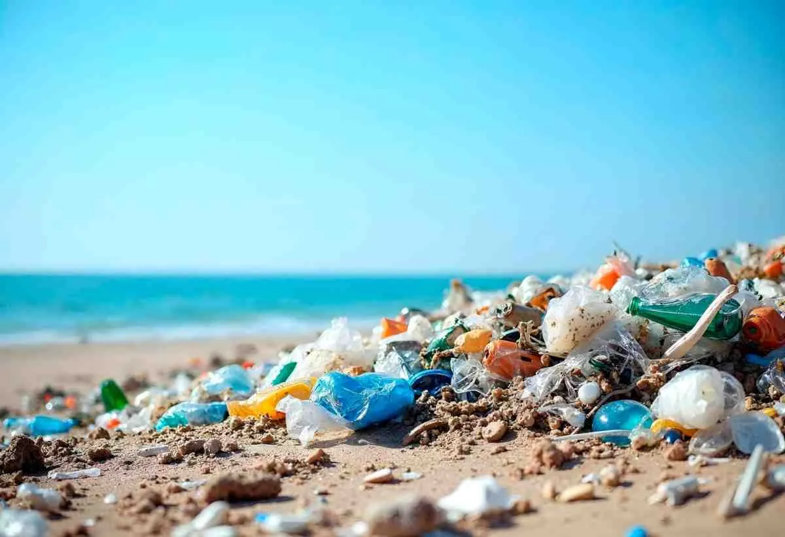
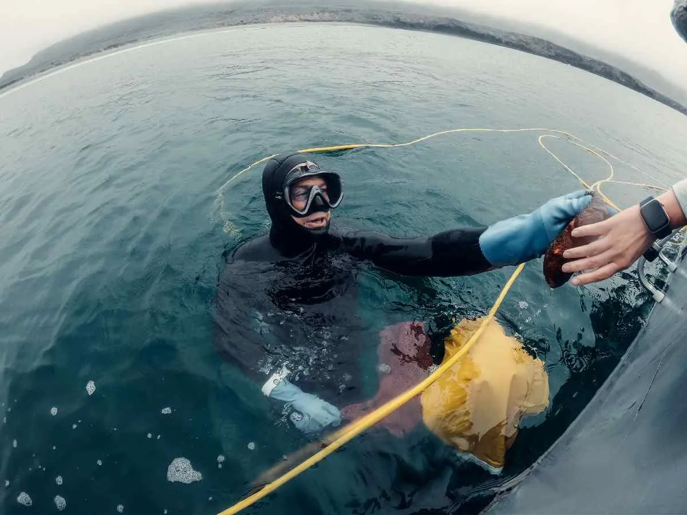

Using autonomous sampling grids across high-yield maritime trade ports to index production liability parameters directly at source channels.
Securing vulnerable coastal nesting zones utilizing thermal tracking arrays linked to regional dispatch hubs.
Evaluating long-term structural survivability metrics inside historical bleaching quadrants utilizing advanced algorithmic scans.

Deploying smart fleet frameworks mapping trace algorithmic intercept flight lines across oceanic gyres to accelerate micro-material aggregation loops.
Assisting artisanal fishing guilds with localized quota management systems to increase commercial margins while protecting local ecosystems.
Structuring rigorous parameters for deep pelagic corridors to prevent ecosystem collapse under rapidly changing oceanic temperatures.